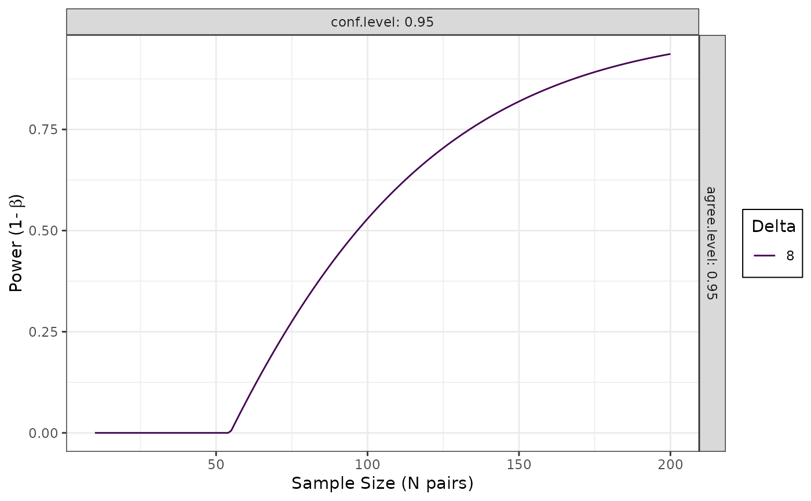

![[Maturing]](figures/lifecycle-maturing.svg) This function calculates the power for the Bland-Altman method under varying parameter settings and for a range of sample sizes.
This function calculates the power for the Bland-Altman method under varying parameter settings and for a range of sample sizes.
Usage
blandPowerCurve(
samplesizes = seq(10, 100, 1),
mu = 0,
SD,
delta,
conf.level = 0.95,
agree.level = 0.95
)Arguments
- samplesizes
vector of samples sizes at which to estimate power.
- mu
mean of differences
- SD
standard deviation of differences
- delta
The threshold below which methods agree/can be considered equivalent, can be in any units. Equivalence Bound for Agreement. More than one delta can be provided.
- conf.level
the confidence level(s) required. Default is 95%. More than one confidence level can be provided.
- agree.level
the agreement level(s) required. Default is 95%. The proportion of data that should lie between the thresholds, for 95% limits of agreement this should be 0.95. More than one confidence level can be provided.
Value
A dataframe is returned containing the power analysis results. The results can then be plotted with the plot.powerCurve function.
References
Lu, M. J., et al. (2016). Sample Size for Assessing Agreement between Two Methods of Measurement by Bland-Altman Method. The international journal of biostatistics, 12(2), doi:10.1515/ijb-2015-0039
Examples
# \donttest{
powerCurve <- blandPowerCurve(samplesizes = seq(10, 200, 1),
mu = 0,
SD = 3.3,
delta = 8,
conf.level = .95,
agree.level = .95)
# Plot the power curve
plot(powerCurve, type = 1)

# Find at what N power of .8 is achieved
find_n(powerCurve, power = .8)
#> # A tibble: 1 × 5
#> delta conf.level agree.level power N
#> <dbl> <dbl> <dbl> <dbl> <dbl>
#> 1 8 0.95 0.95 0.800 145
# }
# If the desired power is not found then
## Sample size range must be expanded